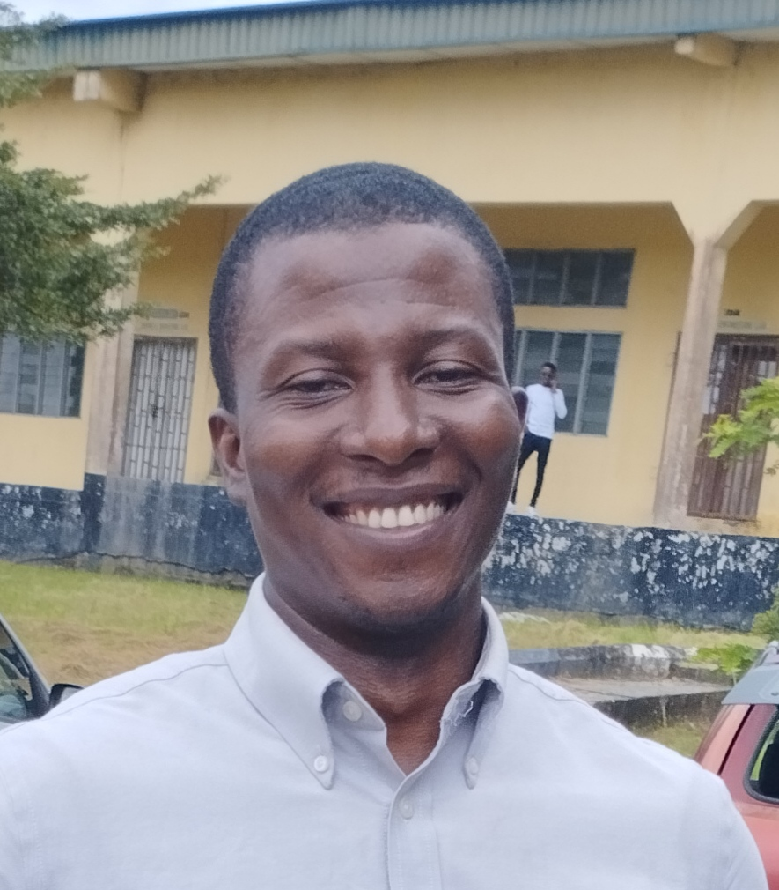

Emediong Udofia | WDD 130
Hello! My name is Emediong Udofia and I am from Akwa Ibom, Nigeria. I served my mission in the Ghana Accra mission. I started my mission in the year 2013 and finished in the year 2015. Upon my return enrolled in a university here in Nigeria where I studied Electrical/Electroic Engineering. I have obtained a bachlor's degree in Electrical Engineering from the University of Uyo, Nigeria, with one year internship experience in a 132/33kv Transmission Sub-station. I have an entry level work experience as a data analyst with proficiency in python, R, Tableau and microsoft Power BI. I enjoy cooking, singing and palying the piano, reading the scriptures, sports, and coding. My decision to enrol in BYU pathway came as a result of my continued desire to improve myself, acquire more education, improve my skills, thereby positioning myself for better employment and becoming self-reliant. It is my greatest desire to work as a full stack developer for one of the companies here in Nigeria.